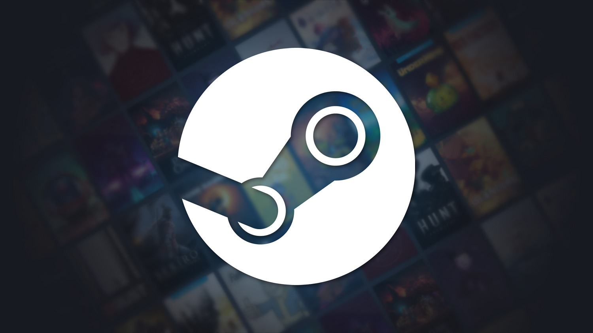
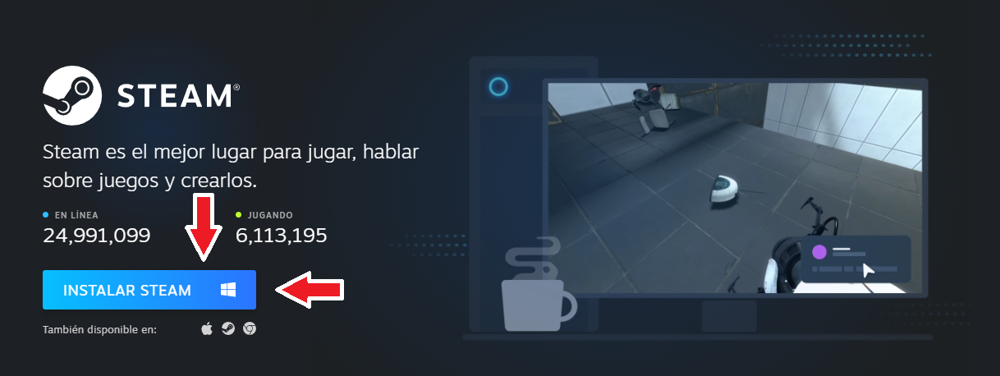
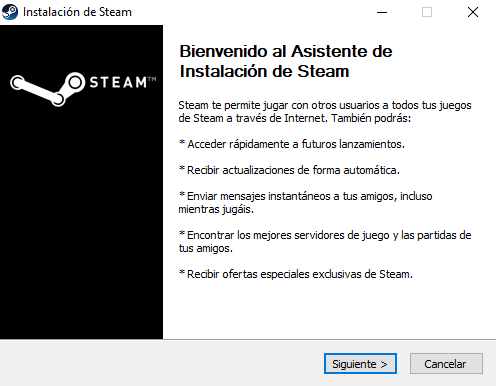
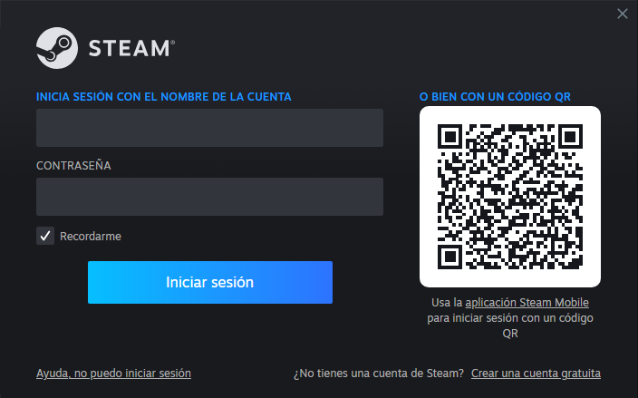
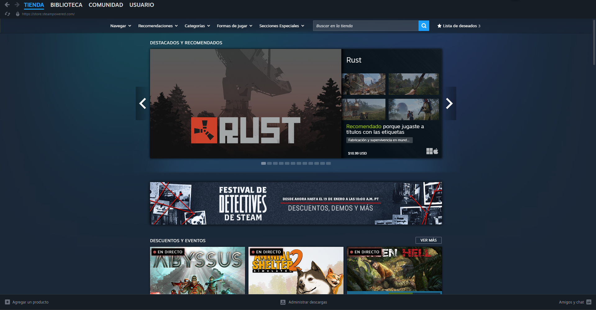

¡Descargá e instalá el mejor lanzador de juegos para PC!
Steam es el lanzador de juegos más popular para PC. Permite comprar, descargar,
instalar y gestionar juegos y programas desde una sola plataforma. Además, ofrece funciones
sociales como
amigos, chat de texto y voz, logros y guardado en la nube.

Steam está disponible para los sistemas operativos Windows, Linux y
macOS, pero en esta guía nos enfocaremos en su instalación en Windows.
Cómo instalar Steam en tu computadora.
Paso 1: Descargar Steam
Primero, debemos descargar el instalador oficial de Steam desde su sitio web oficial.

Paso 2: Ejecutar el instalador
Con el archivo descargado, damos doble clic sobre el ejecutable para iniciar la instalación.
Se abrirá el asistente de instalación:

Este asistente guiará el proceso de instalación paso a paso, permitiendo elegir el idioma y la
ubicación donde se instalará el programa.
Una vez que finalice la instalación, si hemos marcado la opción "Ejecutando Steam" en el último
paso, el
programa se abrirá y comenzará a actualizarse.
Paso 3: Iniciar sesión o crear una cuenta
Luego de que el programa termine de
actualizarse, el usuario podrá iniciar sesión con una cuenta
existente o crear una cuenta nueva si es la primera vez que utiliza la plataforma.

Paso 4: Steam listo para ser utilizado
Después de haber iniciado sesión, Steam quedará completamente operativo.
Podremos explorar la
Tienda para comprar juegos y/o instalar juegos desde la Biblioteca.

A partir de ahí, Steam se ejecutará como cualquier otro programa y podrá iniciarse junto al
arranque de Windows si así se desea.
¿Por qué recomiendo usar Steam?
Steam no solo es un lanzador de juegos, sino que también incluye algunos programas en su Tienda.
Entre esos programas se incluyen: editores de video, grabación de video y/o sonido, entre otros.
Es una plataforma completa que nos permite realizar compras, interactuar con la comunidad y
comunicarnos con nuestros amigos o incluso, hacer amigos.
Su compatibilidad y constante actualización, junto a la facilidad de uso del programa lo
convierte en una de las mejores opciones para jugar en PC.